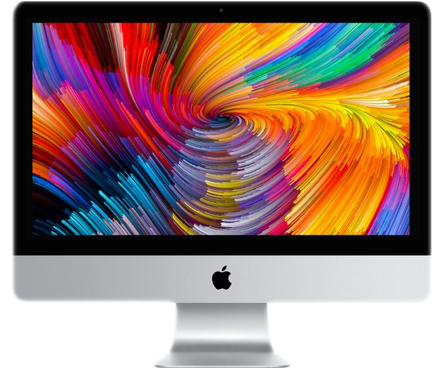
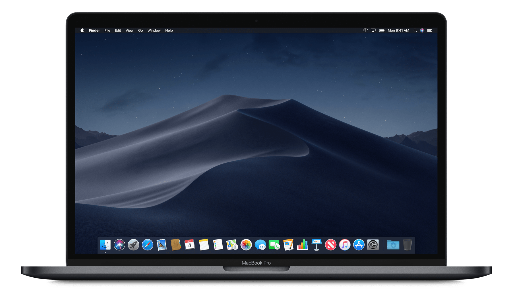

|  |  | |
|---|---|---|
| Processeur | Intel Core i5 quadricœur à 3,8 GHz (Turbo Boost jusqu’à 4,2 GHz) | Intel Core i5 quadricœur à 2,3 GHz (Turbo Boost jusqu’à 3,8 GHz) avec 128 Mo de mémoire eDRAM |
| Ecran | Écran Retina 5K de 27 pouces (diagonale) Résolution de 5 120 x 2 880 pixels avec prise en charge de plus d’un milliard de couleurs Luminance de 500 nits Large gamme de couleurs (P3) |
Écran rétroéclairé par LED de 13,3 pouces (diagonale) avec technologie IPS ; résolution native de 2 560 x 1 600 pixels à 227 pixels par pouce avec prise en charge de millions de couleurs |
| Mémoire | 8 Go (2 x 4 Go) de mémoire DDR4 à 2 400 MHz ; quatre logements SO‑DIMM accessibles par l’utilisateur Configurable en 16, 32 ou 64 Go |
8 Go de mémoire intégrée LPDDR3 à 2 133 MHz Configurable avec 16 Go de mémoire |
| Carte graphique | Radeon Pro 580 avec 8 Go de VRAM | Intel Iris Plus Graphics 655 |
| Wifi | Connectivité Wi‑Fi 802.11ac Compatible IEEE 802.11a/b/g/n | Connectivité Wi‑Fi 802.11ac ; compatible IEEE 802.11a/b/g/n |
| Caméra | Caméra FaceTime HD | Caméra FaceTime HD 720p |
| Audio | Haut‑parleurs stéréo Micro Prise casque 3,5 mm Prise en charge des écouteurs iPhone Apple avec micro |
Haut‑parleurs stéréo à gamme dynamique élevée Trois micros Prise casque 3,5 mm |
| OS | MacOS | MacOS |
| Prix | 2 599 € | 1 999 € |